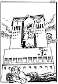

|
Dagens Inge:  Inge-galleri Tidligere artikler |
Dagens ledere Morgen: USAs Cuba-politikk Nye toner |
Aften: NSB kan få nei igjen |
|
Kommentar En tiårsdag som ikke markeres DET TIER VI OM: I alle spaltekilometer svensk presse har brukt foran tiårsdagen for mordet på Olof Palme, har den nesten ikke skrevet om sin egen rolle. PER EGIL HEGGE Kommentatoren er kulturredaktør i Aftenposten.
Skadeverk og reparasjon
|
I dag Den tomme politiske vilje POLITIKERNES IMAGE: Politikerne er kanskje na turlig schizofrene? NINA KARIN MONSEN Filosof og forfatterinne
| |
|
Kronikk Vil hydrogen bli fremtidens energibærer? TOR TRAASDAHL Vi står foran gjennombruddet for en ny energibærer uten drivhuseffekt: hydrogen, skriver Tor Traasdahl, som er daglig leder i Framtiden i våre hender. Stoffet finnes i uuttømmelige mengder, og de tekniske problemene er nå stort sett løst. Prisen vil bli den avgjørende faktor. Hvis staten nøyer seg med lite mer enn moms på hydrogen, vil vi om få år kunne kjøre fossilfritt for 4-5 kroner pr. mil.
|
||